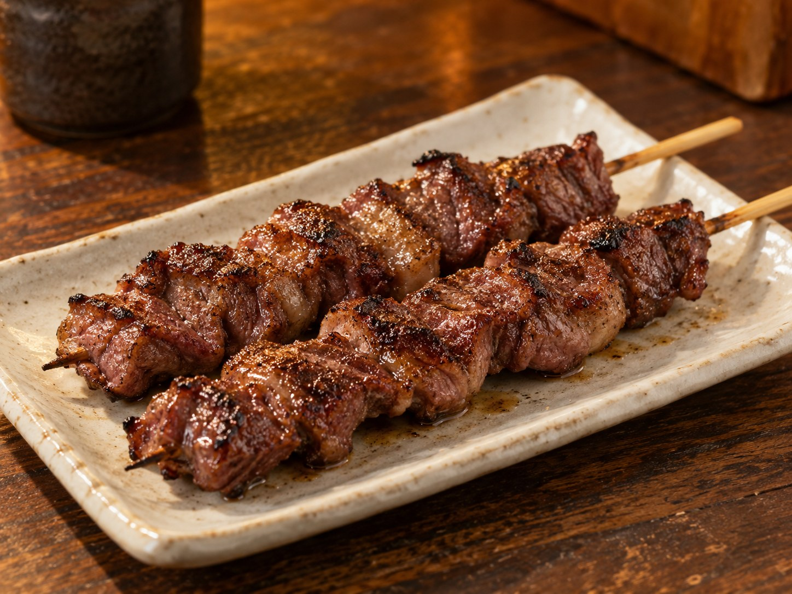
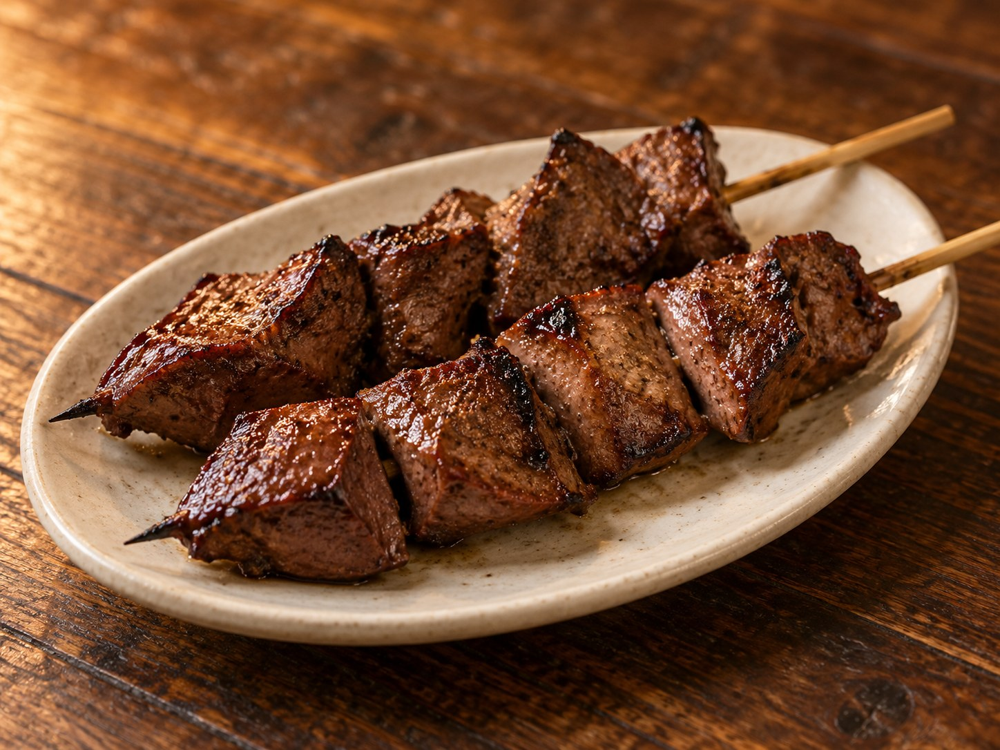
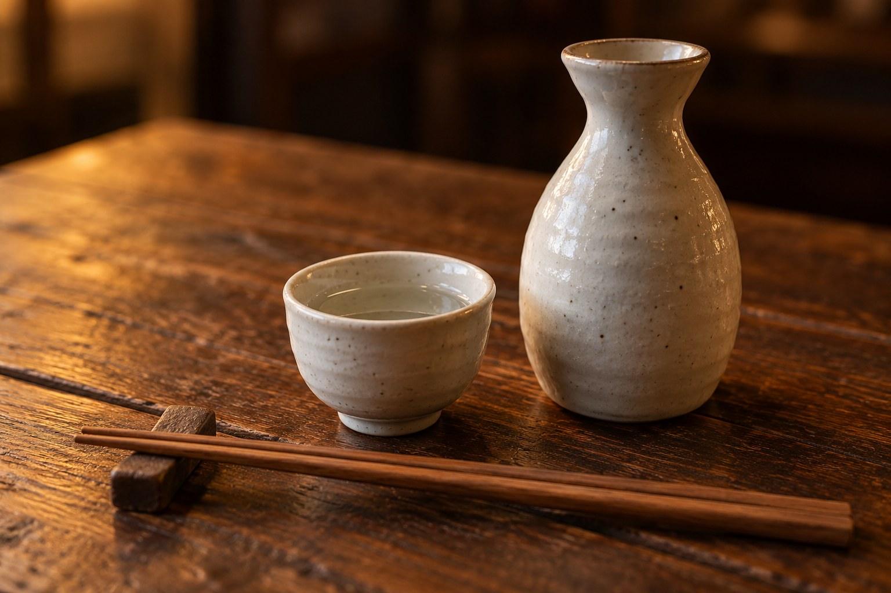

一さがり
肉の旨み噛むほどに広がる肉の味わい。
炭火の香りを添えて。
一本ずつ、いい夜になる。
山形駅東口から 徒歩約5分
17:30 から、夜の一串。
豚もつを楽しむ 炭火焼き
山形で出会う、もうひとつのやきとり。
そね田の主役は、豚もつの串焼き。
もつ、はつ、さがり、こぶくろ。
部位ごとに変わる旨みと歯ざわりを、
炭火の香ばしさとともに味わいます。
まずは、おまかせで。
一串を味わい、お酒をひと口。
次の焼き上がりを待つ時間まで、
ゆっくりお楽しみください。

もつ ／ レバー表面の焼き目と、内側のやわらかな食感。
ひと口に重なる味わいを、まずは一串。
そね田のもつを、ゆっくり味わってください。
ひとりで、ふらりと。
気の合う人と、肩を並べて。
カウンターで過ごす夜に、
串焼きとお酒という、ちょうどいい楽しみを。

豚もつを中心にした、炭火の串焼きです。もつ（レバー）、さがり、はつ、こぶくろなど、部位の違いをお楽しみいただけます。
まずはおまかせがおすすめです。当日の内容や量、ご予算、苦手な食材については、お電話またはご注文時にご相談ください。
お電話（023-622-8453）でお問い合わせください。ご希望の日時・人数をお伝えのうえ、受付の可否をご確認ください。
お支払いは現金をご用意ください。専用駐車場はありません。お車でお越しの場合は近隣の駐車場をご利用ください。
山形駅東口から徒歩約5分
営業時間・お休みは変更になる場合があります。
ご来店前にお電話でご確認ください。
YAMAGATA / KASUMICHO
山形駅東口から、香澄町方面へ。
詳しい道順は地図でご確認いただけます。
炭の香りに、誘われて。
やきとり そね田 ↗